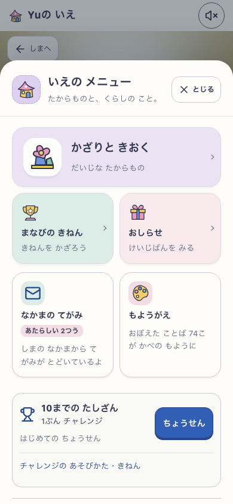

島のメニューを、ひとつの世界へ。
家のやわらかな紙と布の配色を、島・もちもの・設定にも。絵で選べる入口と、読みやすい説明へ揃えました。
ローカル実装・検証済み／本番未公開実アプリのスクリーンショット。200しずく・2住民・収納は隔離した表示fixtureです。画像をクリックすると原寸で開きます。
iPadでも同じ素材
小さな画面・横向き
前回の家との連続性

基準：前回の家メニュー異なる表示fixture。未読と語数の比較ではなく素材の確認。今回の島メニュー育つ島・390 × 844標準Islandの入口も統一
実画面の検証記録
6ケースで入口44px・横のはみ出し・各項目の往復・価格・正本と残高・全数字キーを検査。音OFF、390幅は通常motion、ほかはreduced motion。
- growing-390：PASS (390 × 844)
- growing-768：PASS (768 × 1024)
- growing-320：PASS (320 × 568)
- growing-568：PASS (568 × 320)
- standard-390：PASS (390 × 844)
- standard-768：PASS (768 × 1024)
見た目は作者のレビュー。未説明の子どもの観察はN=0。実機と本番PWAはこの検査に含めません。
変更と検証の説明 · 実行report